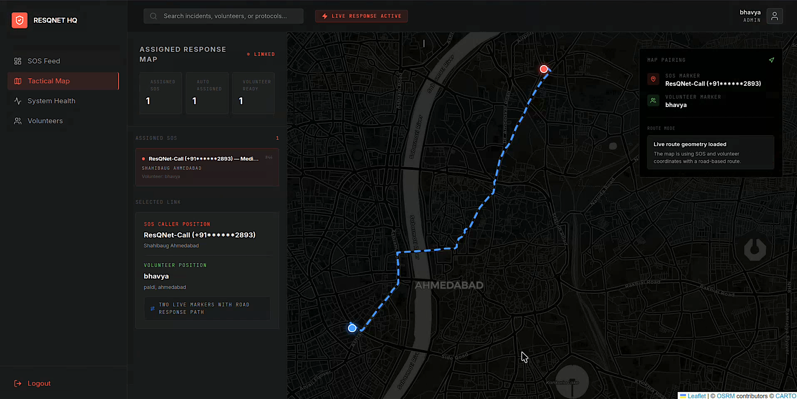
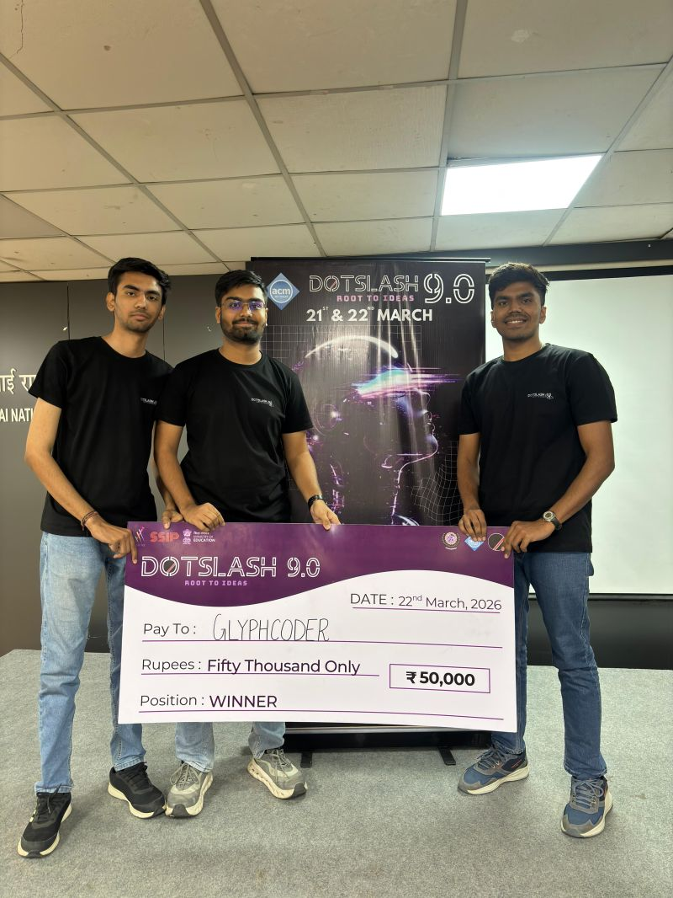

FinSheild Hackathon 2025
Bank of India & IIT Hyderabad • Top 9 Shortlisted
Participating in the FinShield Hackathon 2025, organized by the Bank of India in collaboration with IIT Hyderabad, was an incredible journey. Out of 661 applicants, only 72 teams were shortlisted for the final presentations. Our team developed RiskAnalyzer, a predictive machine learning system designed to analyze credit default probabilities using non-traditional utility data.
Throughout the event, we collaborated on building robust predictive models and designing an intuitive, real-time dashboard. Being recognized in the Top 9 was a huge milestone that validated our efforts in alternative risk assessment.
Hack-a-Mind Hackathon 2026
Nirma University & SUNY Binghamton • Runner Up



At the Hack-a-Mind Hackathon 2026, sponsored by Pet Pooja and Quantloop.tech, our team won the Runner Up title and secured a track prize. We designed StoryArc AI, an episodic narrative generation engine powered by Google Gemini AI, designed to analyze and format vertical 90-second mobile show episodes.
We built Gemini integrations, optimized structure layouts, and fine-tuned generation heuristics. It was a fast-paced coding sprint that taught us how to prototype generative tools under high pressure.
Dotslash 9.0 Hackathon 2026
SVNIT Surat • Grand Winner


Winning the Dotslash 9.0 Hackathon organized by ACM NIT Surat was one of the highlight moments of the year. Competing with 800+ teams and 2,400+ participants across India, we developed ResQNet, a Web3-enabled collaborative emergency management and dispatch portal linking disaster survivors to dispatch centers and local volunteer responders.
We designed full-stack geocoded map integration, smart contract integrations, and robust real-time communication bridges to bypass centralized dispatch limitations during grid blackouts. Winning first place was an unforgettable team accomplishment.
TinyML-Based Smart Grid Research
15th International Smart Grids Conference • Published Paper
This research paper, titled "TinyML-Based Trojan Detection Framework in Smart Grid Systems", was accepted and published at the 15th International Smart Grids Conference (2025). The project focuses on deploying hardware-constrained TinyML classifiers onto edge power nodes to intercept and neutralize network Trojan injections in real time.
We proved that lightweight neural networks can successfully detect malicious anomaly patterns at the edge without introducing power or latency overhead to critical grid infrastructures.
Collaborative Drone Navigation (RL)
Preprint Research Paper
Our preprint paper, "Machine and Reinforcement Learning-Based Collaborative Framework for Drone Navigation in Battlefield Environment", outlines a multi-agent deep Q-network strategy to optimize drone swarm search paths and collision avoidance profiles under simulated radar jamming scenarios.
We designed reward schemes that encourage mutual coordination and battery preservation constraints, yielding resilient swarm formations compared to classic target-pursuit algorithms.